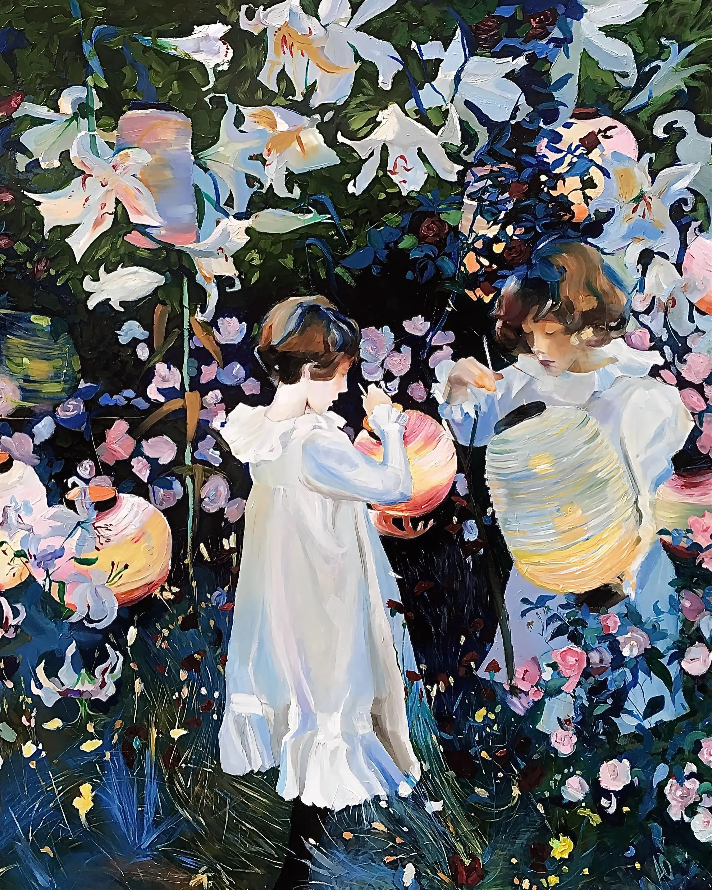
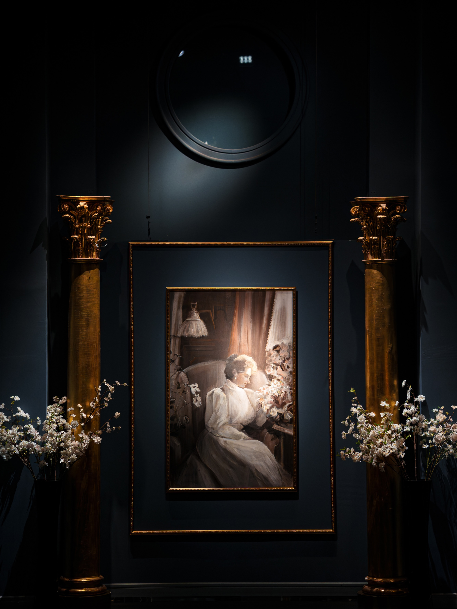
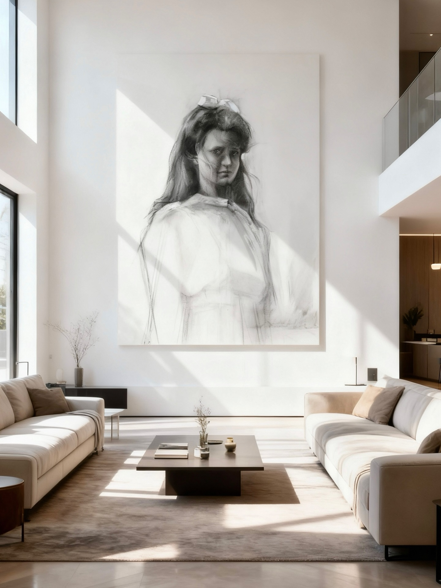
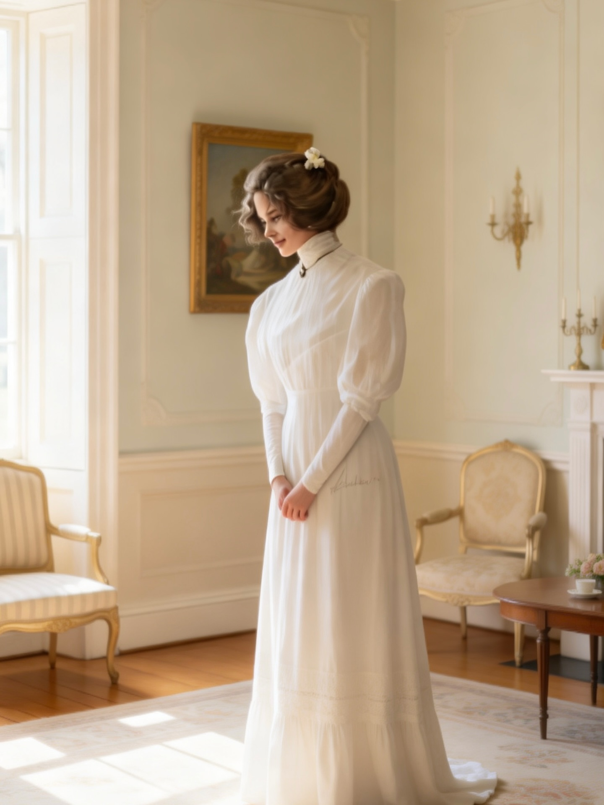
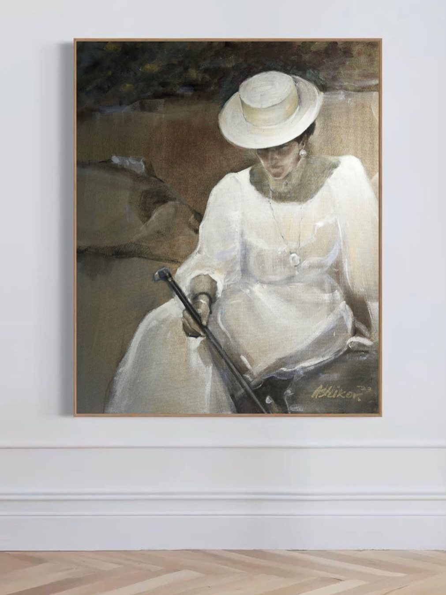
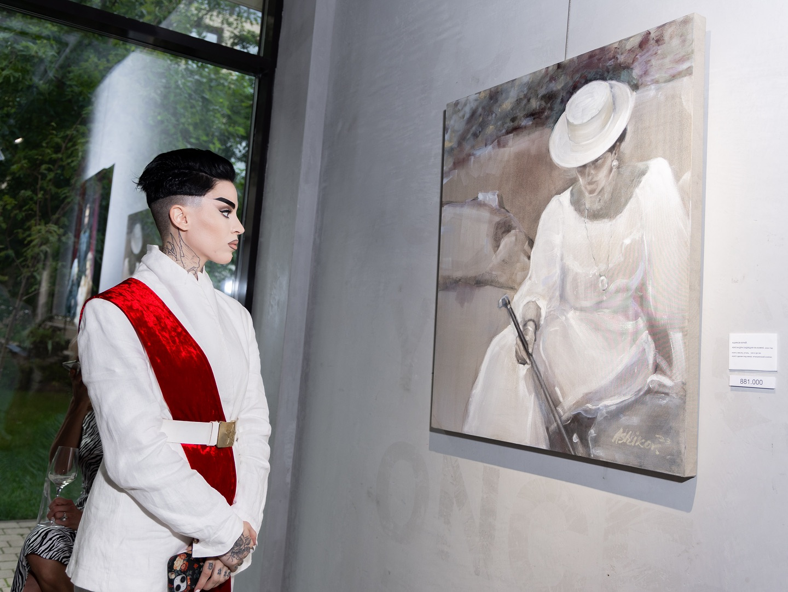
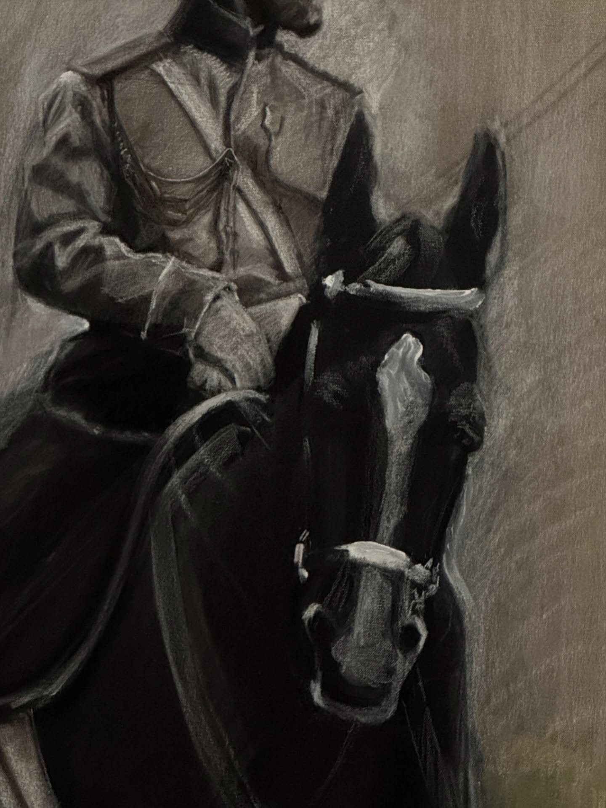
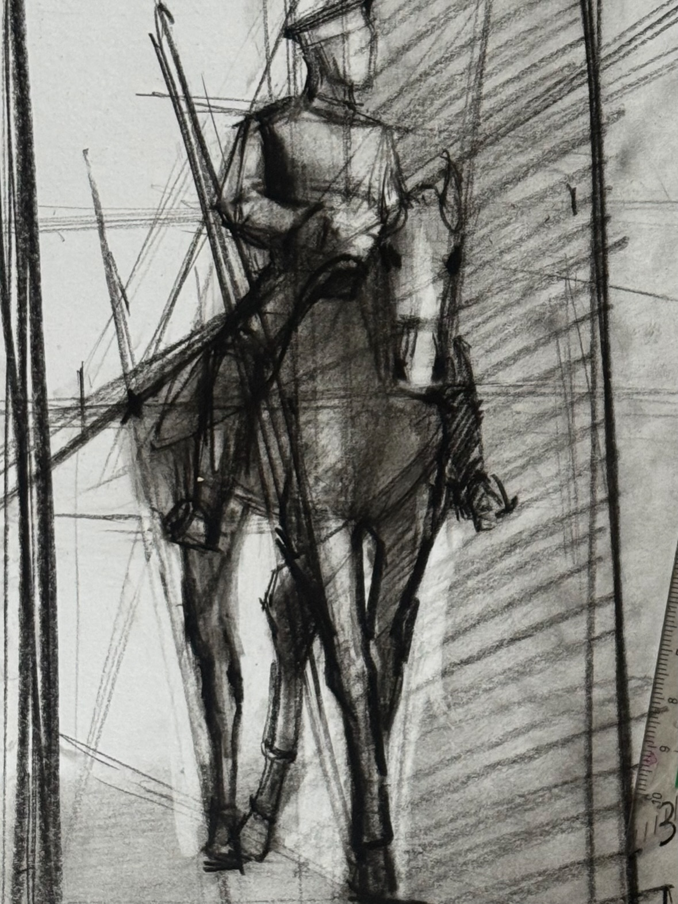
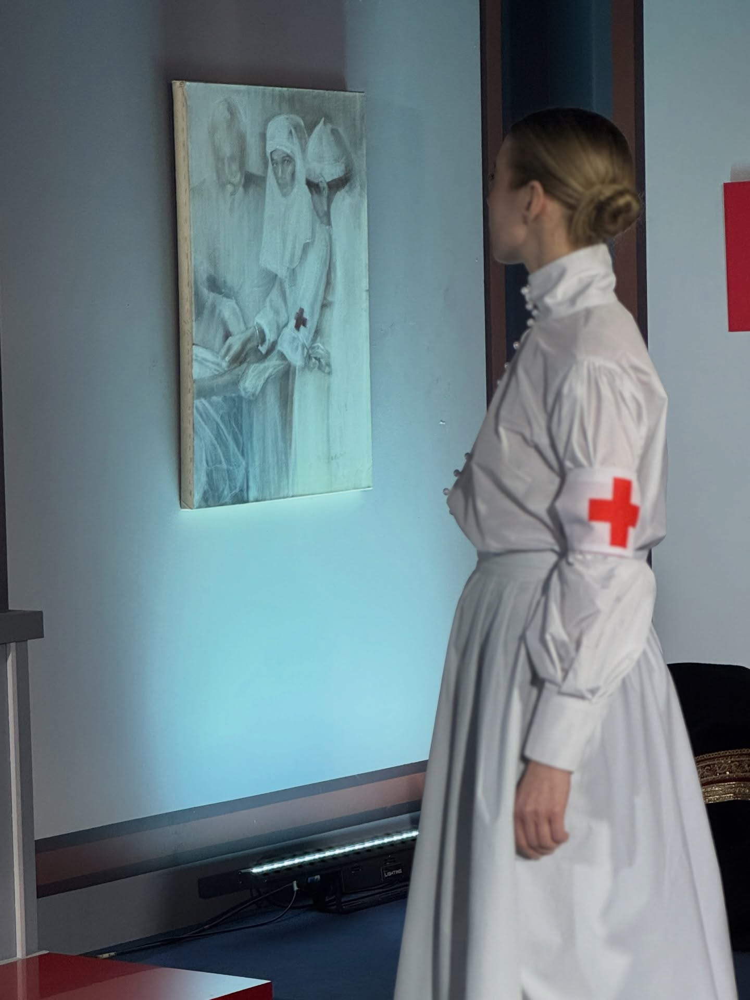
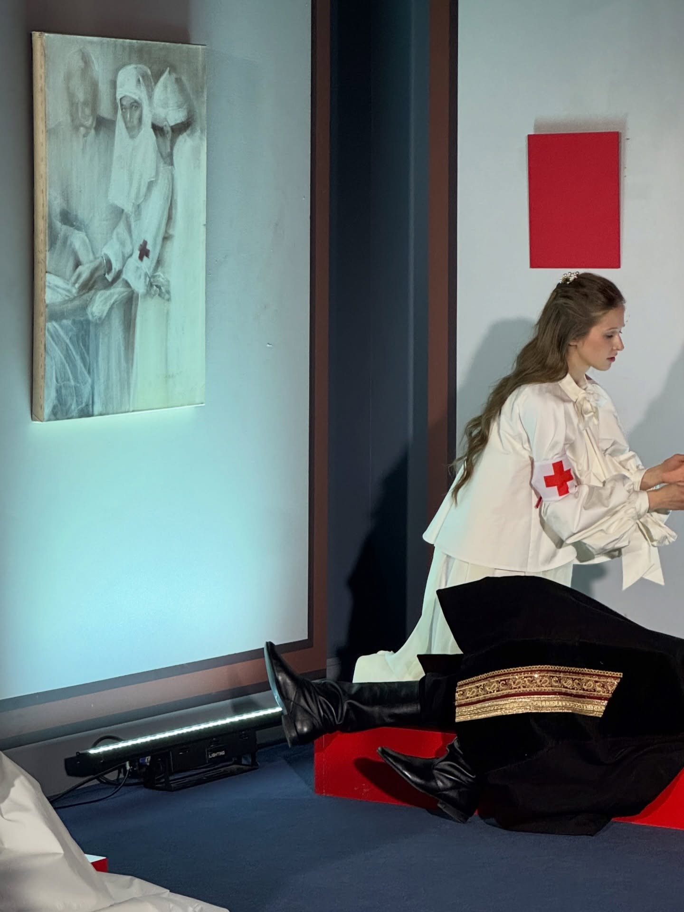

Информация о художнике
Юрий Валерьевич Ашиков
род. 1994 · Москва
Продюсер культурных проектов / куратор / художник
Рассказываю об искусстве. Преподаю. Пишу маслом и углём. В 2020 создал проект: «Романовы. Культурное Наследие». Пишу картины на заказ.
Современный российский живописец-портретист. В фокусе — непарадный семейный портрет Дома Романовых по любительским архивным снимкам, дневникам и переписке. Образование — Московский художественно-промышленный институт (арт-дизайн). Стажировки во Флоренции, Токио и Лондоне. Линия портретного реализма школы Валентина Серова (самопозиционирование). Первая персональная — ArtMaison; 12 персональных выставок и ярмарки. Постоянная экспозиция в Музее Николая II.
Фотографии / работы
Галерея
Живопись цикла «Романовы» и кадры из Instagram @artist_ashikov.
Живопись
Избранные полотна и рисунки цикла «Романовы. Культурное наследие».


Из Instagram
Работы и кадры с @artist_ashikov — именованные полотна, экспозиции и этюды.










Проекты
Циклы и выставки
Главный цикл, именованные работы и выставочная лента по Instagram highlights.
Главный цикл · с 2020
Романовы. Культурное наследие
Цикл портретов семьи Николая II — император, Александра Фёдоровна, Ольга, Татьяна, Мария, Анастасия, цесаревич Алексей. Техника — живопись и уголь. Метод: любительские семейные фото (Kodak), корреспонденция; отказ от парадной иконографии. Постоянная экспозиция в Музее Николая II; проект на artcentre.moscow.
Страница на Центре искусств →
Мария
Точка отсчёта серии — портрет по найденному снимку в шляпе периода ареста. Стиль легче и «призрачнее» остальных работ цикла. Также: Maria is in the Field (2023).
Семья
2021–2023. По фотографии семьи на фоне яхты «Штандарт» — непарадный групповой образ. Highlight: ROMANOVS FAMILY.
Николай и Алекс. Ливадия
Ок. 2020. Отец с сыном — на крыльце / у моря. Экспедиционный мотив Ливадии. Рядом: «Николай на молитве», «Гордость».
Алекс и Никки
2022. Непарадный диалог супругов — Александра и Николай вне официальной репрезентации.
Сестра милосердия, Ольга
Портрет и экспозиционный перформанс. Рядом в цикле: «Ольга, момент радости».
Девочки с китайскими фонариками
Копия Сарджента (Carnation, Lily, Lily, Rose), заказ 2017 — масло.
Опера-мистерия «Сад Сердца»
Культурный проект в Центре искусств Москва — кураторская и продюсерская линия.
PETR I
Исторический мотив и этюды всадника (уголь) — highlight PETR I в Instagram.
Выставки и площадки
- ArtMaison 2023 · первая персональная
- Molbert 2023
- Музей Николая II 2024 · постоянная экспозиция
- Музей Романовых экспозиция / отзывы СПб
- Cosmoscow ярмарка · highlight Cosmoscow 26
- Центр Искусств. Москва 2026 · «Сад Сердца» / Романовы
- Nevsky.A Санкт-Петербург